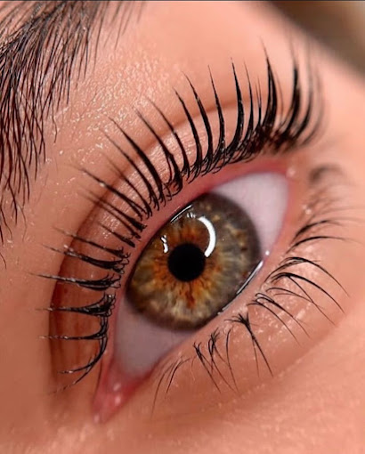

Guía profesional · Granollers
¿Lifting o extensiones de pestañas?
Si te gusta el largo de tus pestañas pero son rectas, el lifting realza su curva. Si buscas más longitud o densidad, las extensiones añaden fibras.
Consultar opciones de pestañas
La diferencia no es solo visual.
El lifting eleva tus pestañas desde la raíz. En Nohuska incluye tinte vegano para definir las puntas claras. El resultado depende de la longitud y la densidad de tus pestañas naturales.
Con las extensiones pelo a pelo, elegimos la longitud, la curva y el grosor de las fibras según tus pestañas y el efecto que buscas. Al renovarse tus pestañas naturales, pueden quedar huecos.
Comparación directa
Esta tabla compara lifting y extensiones pelo a pelo. Click Lash es una opción de colocación puntual: consulta sus cuidados y retirada por separado, sin asumir el mismo plan de rellenos.
| Aspecto | Lifting coreano con tinte | Extensiones pelo a pelo |
|---|---|---|
| Qué trabaja | Tu pestaña natural | Añade fibras sobre pestañas aptas |
| Resultado | Curvatura y apertura visual, sin añadir longitud ni densidad nuevas | Longitud, dirección y densidad con fibras añadidas |
| Precio y cita | 55 € · aproximadamente 1 hora · tinte incluido | 55 € · primera puesta alrededor de 90 minutos |
| Mantenimiento | Evoluciona con el ciclo natural; no necesita rellenos de fibras | Relleno: 35 €; retirada: 15 €. Nohuska valora qué servicio necesita el conjunto |
| Elección del diseño | Según longitud y dirección propias | Según ojos, pelo natural y efecto |
Las extensiones de volumen mantienen el precio de la primera puesta. Para extensiones marrones, granates u otros colores, consulta el tono, la disponibilidad y el precio. Click Lash cuesta 35 € y se coloca en unos 30 minutos; el tiempo de cita no es la duración del resultado.
Para combinar cejas y pestañas naturales, Korean Gaze™ incluye Natural Brow y lifting con tinte por 85 € / unos 90 minutos, no extensiones.
Qué revisamos antes de recomendar.
Observamos el estado del pelo, la dirección de crecimiento, la longitud, la sensibilidad y cualquier procedimiento previo. Si existen molestias, irritación o una alteración activa, puede ser necesario aplazar el servicio.
No recomendamos una intensidad mayor si un diseño más ligero puede conseguir el efecto que buscas. La salud y la capacidad de la pestaña natural marcan el límite del diseño.
Una foto ayuda a orientarte
Envía una fotografía sin maquillaje y cuéntanos si buscas un resultado discreto, definido o más intenso. Confirmaremos la opción durante la valoración presencial.
Enviar foto por WhatsAppTu cita en Granollers
Si buscas un lifting de pestañas en Granollers
Lash Lift es el nombre inglés del lifting de pestañas. En Nohuska, la cita de lifting coreano cuesta 55 € con el tinte vegano incluido y dura aproximadamente una hora.
En la ficha puedes ver un resultado propio de Nohuska antes de pedir tu valoración gratuita.
Ver el resultado del lifting
Comprueba qué opción puede encajar con tu longitud, dirección y objetivo antes de reservar.
Lifting coreano y tinte en GranollersCuidados y mantenimiento.
En el lifting, sigue las indicaciones de las primeras horas y utiliza únicamente productos compatibles con el procedimiento. En extensiones, la higiene es esencial: limpia según las pautas recibidas, no tires de las fibras y no intentes retirarlas en casa.
Los rellenos de extensiones pelo a pelo no tienen una fecha idéntica para todas las personas. Dependen del ciclo natural, los hábitos y la conservación del diseño. En Nohuska explicamos el mantenimiento antes de que reserves.
Si buscas lifting o extensiones en el Vallès Oriental, la cita se realiza en Avinguda Sant Esteve, 40, 08402 Granollers. Consulta disponibilidad antes de desplazarte.
Preguntas frecuentes
¿Qué diferencia hay entre lifting y extensiones?
El lifting eleva tu pestaña natural. Las extensiones añaden fibras para modificar longitud, dirección o densidad.
¿Se puede combinar lifting con tinte?
Sí. En Nohuska el lifting coreano incluye tinte vegano por 55 €, con una cita de aproximadamente 1 hora, si la pestaña permite realizar el protocolo. El tinte solo cuesta 10 € y no incluye lifting; no se suma a los 55 € del servicio combinado.
¿Realizáis Click Lash y extensiones actualmente?
Sí. Consulta disponibilidad y diseño por WhatsApp; las citas se realizan en Granollers.
¿Dónde puedo realizar el lifting?
En Nohuska Beauty Lab, Avinguda Sant Esteve, 40, 08402 Granollers, con cita previa.
¿Lifting o extensiones?
Para añadir fibras, elige tus extensiones de pestañas en Granollers. Para realzar tu pestaña natural sin añadir fibras, consulta el lifting. Nohuska confirmará contigo tratamiento, fecha y hora antes de cerrar la cita.